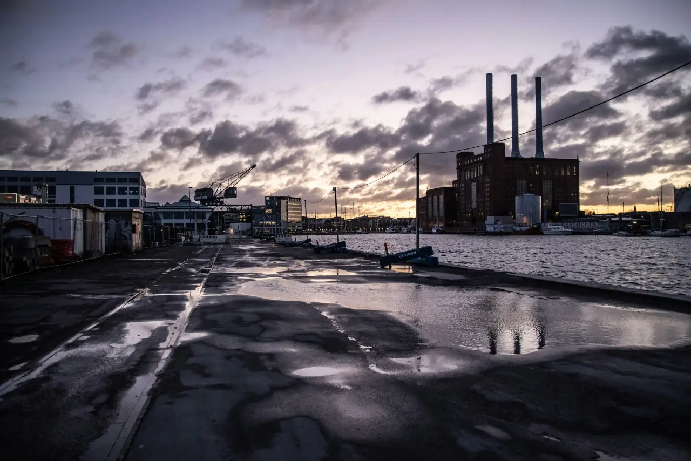
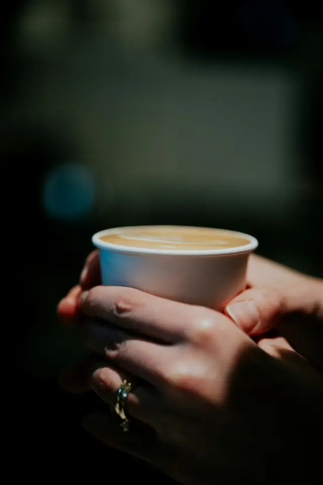
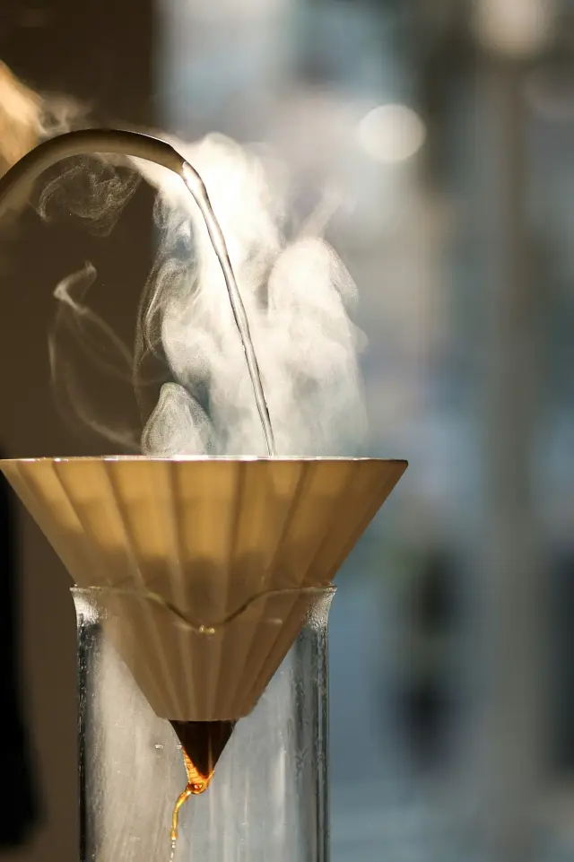
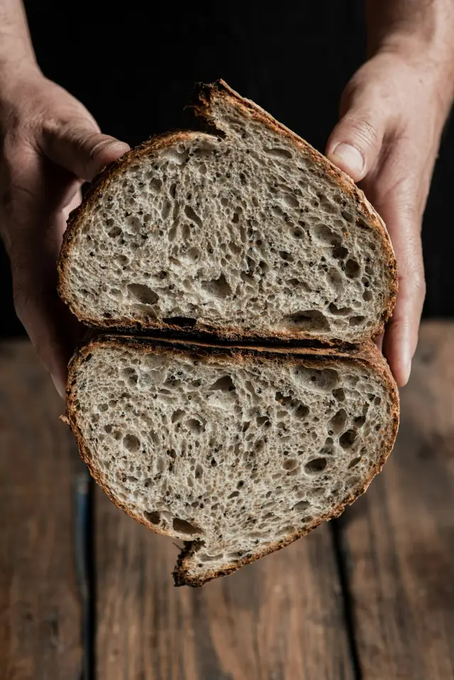
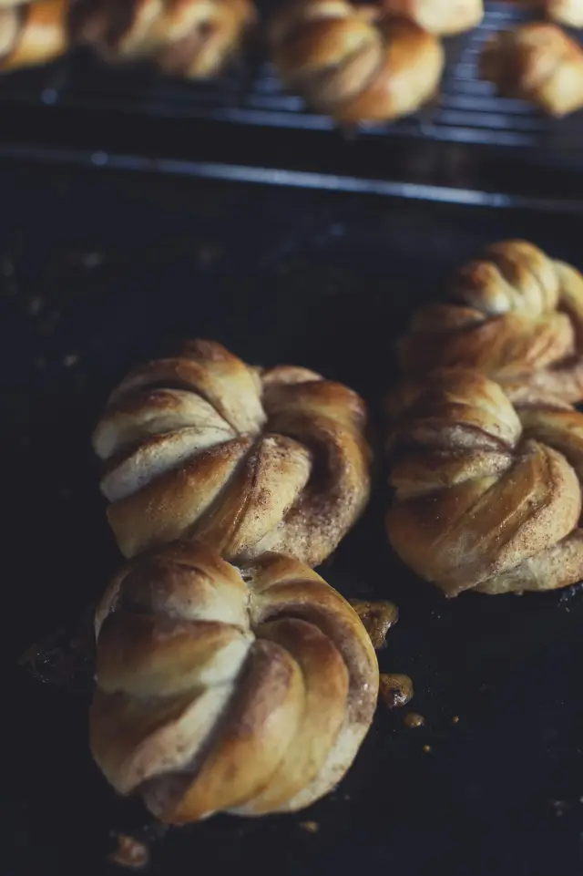
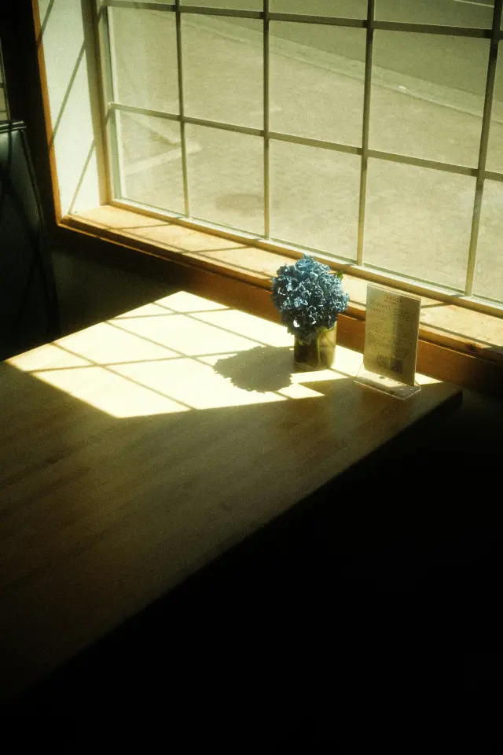
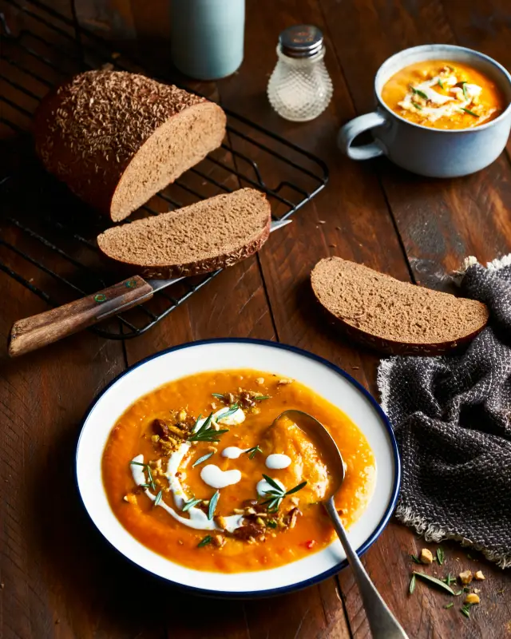
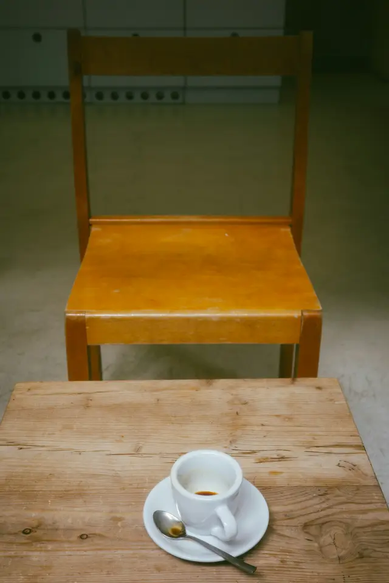
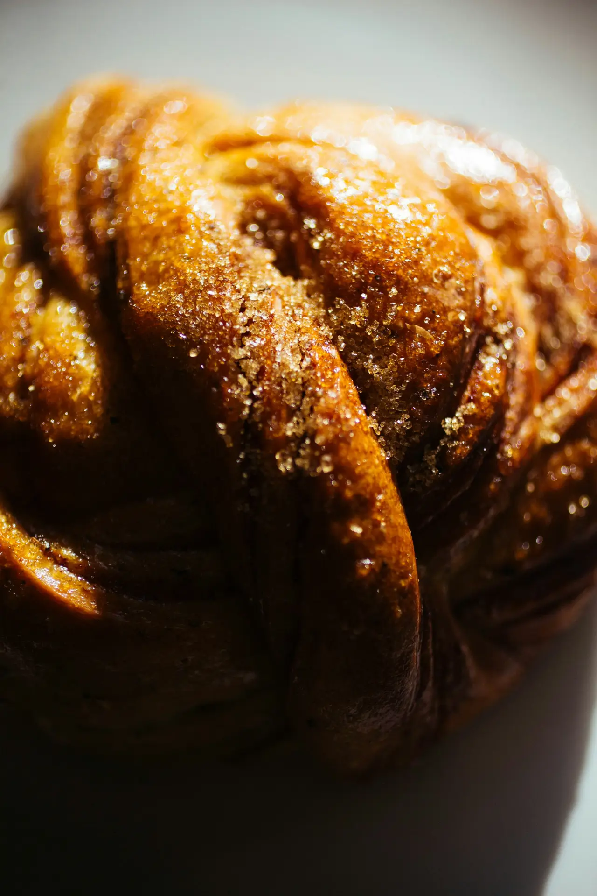

Open before the city is.
A café on the quay in Nordhavn. Filter coffee, warm rye and cardamom buns from 05:30, for the night shift going home and the early shift going in. We close at 13:00, or when the buns run out.
The day, from first light
-

Doors open.
The quay is still dark. First in are nurses off the night shift and crane drivers on their way to the early one. The filter is already in the big pot, and the cups are warm.
-

The second pot.
Filter, made by hand and poured until it’s gone, then made again. No latte art at this hour. Hot coffee in a heavy cup, refills free until seven.
-

Rye, out of the tins.
Baked overnight and sliced while it’s still warm. Cold butter and flaky salt. That’s the whole dish.
-

First tray.
Forty cardamom buns. The smell reaches the bike lane before the tray reaches the counter, and the line starts. There is no second tray.
-

Sun on table four.
Around half past nine the sun clears the buildings across the water and lands on table four. The runners have gone home. New parents arrive, pram first, and stay for a second cup.
-

One soup.
One pot, with the last of the rye on the side. Today it’s pumpkin. The harbour crews come back for it, and the pot is empty by one.
-

Back at 05:30.
The chairs go up on the tables and the pot gets rinsed. The city is just getting going, and we’re done for the day.
On the counter
- Filter, the big pot Filterkaffe05:30 to close
- Oat porridge, brown butter Havregrød05:30 to 09:30
- Warm rye, butter, salt RugbrødFrom 06:45 until gone
- Cardamom bun KardemommesnurreFrom 07:15 until gone
- Soup, with rye Dagens suppeFrom 11:30 until gone
Who’s up this early
Most of the morning regulars, listed by the time they come in.
Mette and Sofie, off the night shift. Same table by the radiator, two filters, and a bun saved for the bus home.
Jens, on his way to the container quay. Drinks his first cup standing up and takes the second in a thermos.
Kasper, who rows. Wet hair, porridge, gone by half past.
Three runners who stretch at the door and won’t order until they’ve cooled down.
Ali and a three-month-old who don’t sleep. He gets the first bun off the tray. House rule.
Hanne, a teacher on her free period, for the last bowl of soup. She usually gets it.

Save a bun for tomorrow.
The first tray is forty buns and it goes fast. Save up to four, and they wait behind the counter in a paper bag with your name on it until 08:00. You pay when you pick them up.
Find the window with the light on.
Where
Sandkaj, Nordhavn, on the wooden promenade by the water.
When
- Tuesday to Sunday
- 05:30 to 13:00
- Monday
- Closed, the bakers sleep
Getting here
Metro M4 to Orientkaj or Nordhavn, then a short walk along the water. By bike, the racks are right by the door.
Inside
Step-free entrance, room for prams, and one accessible toilet. Dogs are welcome on the terrace.